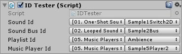

ID Attributes
Description
All content in Stem has unique and persistent identifiers. That means once the content is created, it's ID is fixed, thus allowing to reference it. There are four attributes for each type of content (sound, sound bus, playlist, music player) which help to easily assign content ID in the Inspector:
It's recommended to use IDs instead of string references by default. However, string references might be useful in case there're multiple banks with same content names but different audio data. In this case, referencing by string allows using multiple banks as audio skins by changing PrimaryBank property in the corresponding manager.
Usage
Inspector

Code
using UnityEngine;
public class IDTester : MonoBehaviour
{
[Stem.SoundID]
public int soundId = 0;
[Stem.SoundBusID]
public int soundBusId = 0;
[Stem.PlaylistID]
public int playlistId = 0;
[Stem.MusicPlayerID]
public int musicPlayerId = 0;
private void Start()
{
Stem.Sound sound = Stem.SoundManager.GetSound(soundId);
if (sound != null)
Debug.LogFormat("Found sound: {0}", sound.Name);
Stem.SoundBus soundBus = Stem.SoundManager.GetSoundBus(soundBusId);
if (soundBus != null)
Debug.LogFormat("Found sound bus: {0}", soundBus.Name);
Stem.Playlist playlist = Stem.MusicManager.GetPlaylist(playlistId);
if (playlist != null)
Debug.LogFormat("Found playlist: {0}", playlist.Name);
Stem.MusicPlayer musicPlayer = Stem.MusicManager.GetMusicPlayer(musicPlayerId);
if (musicPlayer != null)
Debug.LogFormat("Found music player: {0}", musicPlayer.Name);
}
}